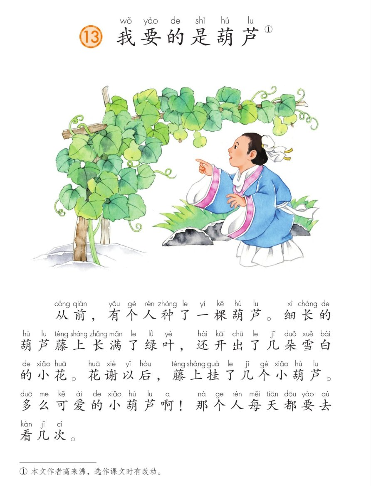
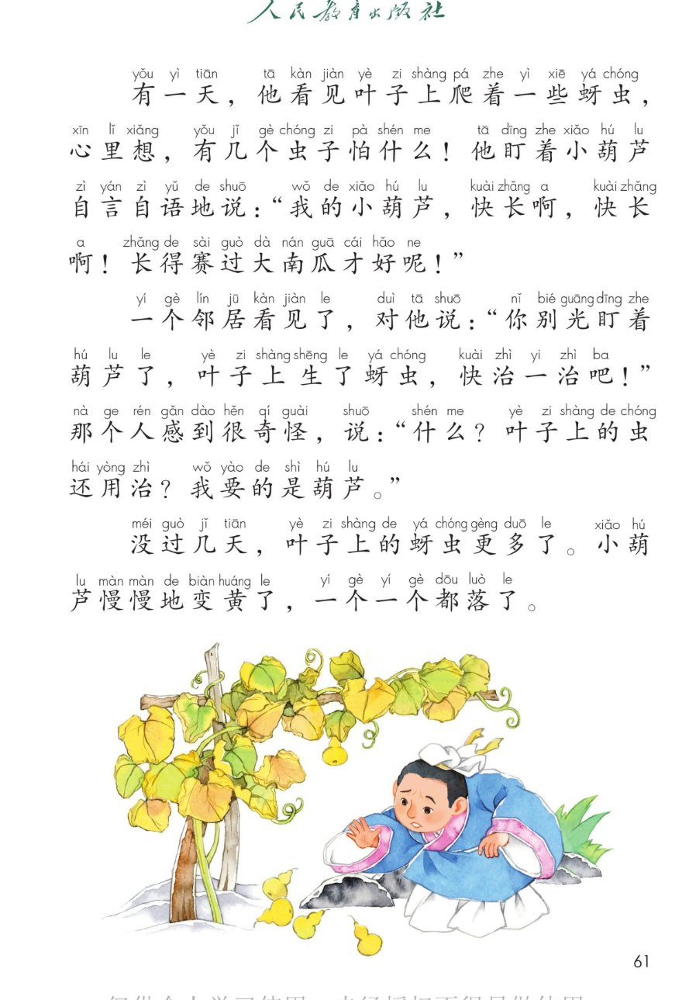
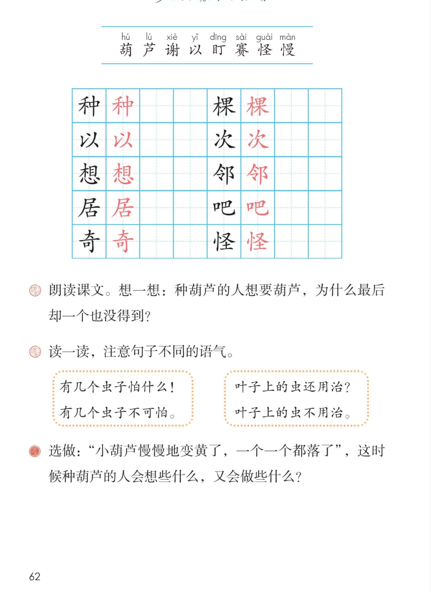

🌿 第 13 课《我要的是葫芦》· 有声图文带读
统编版语文 · 第五单元·阅读 · 课本 P60~62
课文 4 个自然段
会认字 8
会写字 10
听写词 10
近义词 4 组
深入理解 8 题
本课本领 读出语气·明白道理
🎧 五步学（可随时点任意一句、一个字、一个词单独听）：
① 听读课文——一句一句读，读到哪一句哪一句发光；开「跟读」后读完一句留时间让你自己读。
② 学字词——8 个会认字、10 个会写字（含书写提示），点一个读一个。
③ 词语·听写·造句——听写 10 个词（读两遍→你写→报答案→听示范句），再听 4 组近义词辨析。
④ 深入理解——8 道题（认知 / 理解 / 运用 / 拓展），开放题答案不唯一，先想后看。
⑤ 讲故事·分角色——按事情发展顺序讲种葫芦的故事，再分角色读那个人的话和邻居的话。
① 听读课文（点哪一句，读哪一句）点段前的 ①②③ 听整段
注音只标本课要认、要写的字，读音来自课本第 3 页生字表
🎤 朗读要求（老师标准）
① 读准字音，不添字、不漏字、不回读；
② 逗号稍停，句号停得长一点；
③ 问句、感叹句读出语气（句末往上扬或加重）；
④ 人物的话读出心情：那个人满不在乎、很得意，邻居着急、真心劝他；
⑤ “自言自语”要读得像自己跟自己说话。
①从前，有个人种了一棵葫芦。细长的葫芦藤上长满了绿叶，还开出了几朵雪白的小花。花谢以后，藤上挂了几个小葫芦。多么可爱的小葫芦啊！那个人每天都要去看几次。
②有一天，他看见叶子上爬着一些蚜虫，心里想，有几个虫子怕什么！他盯着小葫芦自言自语地说：“我的小葫芦，快长啊，快长啊！长得赛过大南瓜才好呢！”
③一个邻居看见了，对他说：“你别光盯着葫芦了，叶子上生了蚜虫，快治一治吧！”那个人感到很奇怪，说：“什么？叶子上的虫还用治？我要的是葫芦。”
④没过几天，叶子上的蚜虫更多了。小葫芦慢慢地变黄了，一个一个都落了。
🤔 想一想（点我可跳过）
课本的样子（点一张图，听读这一页）点一张图，听读整页

第 60 页 · 课题与第一自然段

第 61 页 · 蚜虫多了，葫芦黄了

第 62 页 · 生字表与课后题
📖 人教版《语文》二年级上册 · 课本第 60~62 页 · 图片仅供个人学习，版权归人民教育出版社所有
② 会认字（8 个）点一个字，听读音、词语和课文里的句子
② 会写字（10 个）结构、部首、笔画与书写提示为通用规范，供参考，以教材和老师的指导为准
种
zhǒng
种树 · 种子
9 画 · 左右（禾）
禾旁捺变点，中竖要直
棵
kē
一棵 · 两棵
12 画 · 左右（木）
左窄右宽，捺变点
以
yǐ
以后 · 以前
4 画 · 左右（人）
竖提加点，左右对称
次
cì
几次 · 一次
6 画 · 左右（冫）
两点水紧凑，撇捺舒展
想
xiǎng
想法 · 想念
13 画 · 上下（心）
上扁下宽，心要托住
邻
lín
邻居 · 邻国
7 画 · 左右（阝）
令捺变点，右耳竖直
居
jū
邻居 · 居住
8 画 · 半包围（尸）
尸头要宽，包住古字
吧
ba
好吧 · 走吧
7 画 · 左右（口）
口要小，弯钩舒展
奇
qí
奇怪 · 好奇
8 画 · 上下（大）
大字要宽，竖钩要直
怪
guài
奇怪 · 怪事
8 画 · 左右（忄）
竖心两点分开写
③ 读一读，注意句子不同的语气（课后第 2 题）点一行，听读这一组句子
！有几个虫子怕什么！ 有几个虫子不可怕。
？叶子上的虫还用治？ 叶子上的虫不用治。
③ 听写（10 个词）读两遍 → 你在纸上写 → 报答案 → 听示范句
准备听写 · 共 10 个词
○ ○ ○
点下面的「开始听写」，听到一个词就写一个词。
③ 听写的词 · 造句示范点词听读，点句子听示范句，再自己说一句
1葫芦课文词语
示范句：从前，有个人种了一棵葫芦。
✏️ 我也能说：谁 + 种了什么
2种下会写字
示范句：春天，我们在院子里种下了一棵小树。
✏️ 我也能说：谁 + 在哪里 + 种下了什么
3一棵会写字
示范句：我家门前有一棵大树。
✏️ 我也能说：一棵 + 什么
4以后会写字
示范句：花谢以后，藤上挂了几个小葫芦。
✏️ 我也能说：什么以后 + 谁做什么
5几次会写字
示范句：那个人每天都要去看几次。
✏️ 我也能说：谁 + 每天做什么 + 几次
6盯着会认字
示范句：他盯着小葫芦自言自语地说。
✏️ 我也能说：谁 + 盯着什么 + 看
7比赛会认字
示范句：运动会上，我们班参加了接力比赛。
✏️ 我也能说：谁 + 参加了什么比赛
8奇怪会写字
示范句：那个人感到很奇怪。
✏️ 我也能说：谁 + 为什么感到奇怪
9邻居会写字
示范句：一个邻居看见了，劝他快治一治。
✏️ 我也能说：我的邻居 + 是谁 + 怎么样
10慢慢会认字
示范句：小葫芦慢慢地变黄了。
✏️ 我也能说：什么 + 慢慢地 + 怎么样
③ 近义词辨析（4 组）相同点 / 不一样在哪 / 各造一句
盯着 — 看着
相同：都是用眼睛看。
不一样：盯着是眼睛一直看着一个地方不动，看得很专心；看着只是看，可以随便看。
盯着：他盯着黑板上的字。
看着：我在窗口看着外面的小雨。
慢慢 — 渐渐
相同：都是不快、一点一点地。
不一样：慢慢可以叠起来说“慢慢地”“慢慢走”；渐渐多用在变化上，比如渐渐变黄、渐渐长大。
慢慢：小葫芦慢慢地变黄了。
渐渐：天渐渐黑了。
奇怪 — 古怪
相同：都是和平常不一样。
不一样：奇怪是心里不明白、想不通；古怪多说人的脾气或者东西的样子特别，有点难接近。
奇怪：那个人感到很奇怪。
古怪：这座老屋的样子有点古怪。
雪白 — 洁白
相同：都是很白很白。
不一样：雪白是白得像雪一样，很亮眼；洁白是干净的白，常说布、云、牙齿。
雪白：藤上开出了几朵雪白的小花。
洁白：天上飘着洁白的云。
③ 词语拓展（说一说，记一记）
数量词一棵葫芦 几个小葫芦 几朵小花 一些蚜虫 一个邻居
写样子细长的葫芦藤 雪白的小花 可爱的小葫芦 绿绿的叶子
…地慢慢地 轻轻地 悄悄地 静静地
表示变化长满了 开出了 挂了 变黄了 落了
④ 深入理解（8 题 · 先想后看）标「答案不唯一」的题，说得有道理都对
认知那个人种了一棵什么？小葫芦是从哪里长出来的？
看解析
🤔 想一想
解析：
种的是一棵葫芦。
['花谢以后，藤上挂了几个小葫芦——先长绿叶、再开小花、后结小葫芦，这是葫芦长大的顺序。']
💡 读第一自然段，抓住“种、长满、开出、挂了”这几个词，就能看清葫芦是怎么长起来的
认知叶子上生了蚜虫，那个人是怎么想的？他心里在乎的是什么？
看解析
🤔 想一想
解析：
他心里想：有几个虫子怕什么！
['他在乎的只有小葫芦——眼睛盯着小葫芦，嘴里念的也是小葫芦，压根没把叶子放在心上。']
💡 留意“盯着”“自言自语”这两个词，它们写出了他心里只有葫芦
理解邻居劝他治一治蚜虫，他为什么不肯治？
看解析
🤔 想一想
解析：
他的理由只有一句：我要的是葫芦。
['在他眼里，叶子和葫芦是两回事：虫在叶子上，跟葫芦没关系。他不知道叶子坏了，葫芦也长不成。']
💡 “我要的是葫芦”这句话，正好说出了他错在哪儿
理解叶子上的虫和葫芦有什么关系？为什么叶子生了虫，小葫芦就落了？
看解析
🤔 想一想
解析：
叶子就像葫芦的饭碗：根吸上来的水和养料，要靠叶子送上去。
['蚜虫把叶子吃坏 → 叶子送不了养料 → 小葫芦变黄、落了。课文最后一段正是这样写的。']
💡 这是本课最重要的一问：葫芦长得好不好，先要看叶子好不好
理解课后第 1 题：种葫芦的人想要葫芦，为什么最后却一个也没得到？
看解析
🤔 想一想
解析：
他要的是结果，却不肯做该做的事：治蚜虫。
['邻居劝他，他不听；蚜虫越来越多，叶子坏了，小葫芦一个一个都落了——所以最后一个也没得到。']
💡 想得到好结果，就要把该做的事一步一步做好
运用课后第 2 题：把“有几个虫子怕什么！”和“有几个虫子不可怕。”读一读，语气有什么不一样？
看解析
🤔 想一想
解析：
“有几个虫子怕什么！”——反问＋感叹号，语气重，满不在乎。
['“叶子上的虫还用治？”和“叶子上的虫不用治。”也是一样：问句的语气比说明句重得多。']
💡 同一个意思，用问句或感叹句说出来，语气就重得多；读的时候句末往上扬
运用用“盯着”和“自言自语”各说一句话。
看解析
🤔 想一想
解析：
盯着：小猫盯着窗外的小鸟。
['自言自语：奶奶一边扫地，一边自言自语。']
💡 “盯着”要写出看得很专心；“自言自语”要写出自己跟自己说话，声音不大
🌈 答案不唯一，句子完整通顺就好
拓展课后第 3 题（选做）：小葫芦慢慢地变黄了，一个一个都落了。这时候种葫芦的人会想些什么，又会做些什么？
看解析
🤔 想一想
解析：
先想他心里怎么后悔：早知道听邻居的话，先治蚜虫，葫芦就不会落了。
['再想他以后怎么做：第二年再种一棵，天天看叶子，一见蚜虫就治。']
💡 想象要合情理：先想他后悔什么，再想他以后怎么做，这样才像这个故事的人
🌈 答案不唯一，想得合理、说得通顺就很好
⑤ 按事情发展顺序讲故事（先说种葫芦，再说葫芦怎么落的）
💬 讲故事支架：先说那个人种下了一棵葫芦 → 再说藤上长满绿叶、开出小花、挂上几个小葫芦 → 接着说他看见叶子上有蚜虫，却觉得“怕什么” → 然后说邻居劝他治，他也不听 → 最后说蚜虫更多，小葫芦一个一个都落了。
⑤ 分角色朗读点一个角色，听他（她）说的话
📖 旁白·开头
“从前，有个人种了一棵葫芦。……多么可爱的小葫芦啊！那个人每天都要去看几次。”
💬 要读得清楚、平稳，像在讲故事；“多么可爱”读得喜欢一点
👨 种葫芦的人
“我的小葫芦，快长啊，快长啊！长得赛过大南瓜才好呢！”
“什么？叶子上的虫还用治？我要的是葫芦。”
💬 自言自语要满不在乎、很得意；两个问句往上扬，最后一句又硬又慢
👩 邻居
“你别光盯着葫芦了，叶子上生了蚜虫，快治一治吧！”
💬 要读出着急、真心劝他的语气
🍂 旁白·后来
“有一天，他看见叶子上爬着一些蚜虫，心里想，有几个虫子怕什么！……小葫芦慢慢地变黄了，一个一个都落了。”
💬 后面两句要读得慢一点、可惜一点